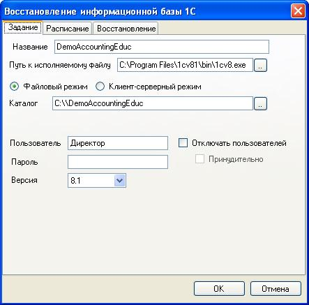
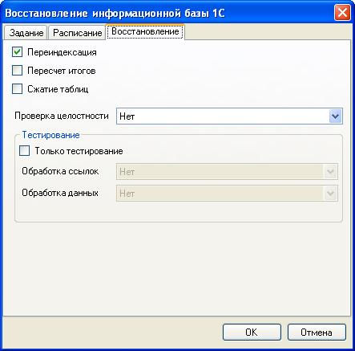

Восстановление информационной базы 1С:Предприятие
Задания этого вида предназначены для тестирования и восстановления информационных баз. Тестирование выполняется средствами самой платформы.
Чтобы создать задание на тестирование информационной базы необходимо в главном меню программы выбрать Добавить — Восстановление базы 1С. Затем появиться окно, в котором необходимо ввести настройки для задания.

На вкладке Задание задаются следующие настройки:
Название
— наименование задания, используется при именовании созданных
резервных копий.
Путь к исполняемому файлу — путь к
запускному файлу 1С: Предприятие.
Файловый режим —
указывает, что 1С:Предприятие используется в файловом
режиме.
Клиент-серверный режим - указывает, что
1С:Предприятие используется в клиент-серверном режиме.
Каталог
— каталог информационной базы (в файловом режиме).
Сервер
1С — адрес сервера 1С (в клиент-серверном режиме).
Имя
базы — имя информационной базы на сервере (в
клиент-серверном режиме).
Пользователь — имя
пользователя для доступа к базе.
Пароль — пароль для
доступа к базе.
Версия — версия используемой
платформы. Если версия выбрана неправильно, то восстановление может
выполняться некорректно.
Отключать пользователей —
при восстановлении базы все активные пользователи будут отключены. В
файловом режиме сначала производиться предупреждение об отключении.
Если пользователь соглашается на отключение, то производиться
тестирование информационной базы, иначе процесс прерывается. Если
установить переключатель Принудительно, то через 1 минуту
производиться отключение независимо от выбора пользователя. В
клиент-серверном режиме отключение производиться без предупреждения.
На вкладке Восстановление задаются следующие настройки:

Переиндексация
— выполнение реиндексации таблиц.
Пересчет итогов
— выполнение пересчета итогов.
Сжатие
таблиц — выполнение сжатия
таблиц.
Проверка целостности
- проверка логической и ссылочной целостности.
Только тестирование —
ограничиться только тестированием информационной
базы без исправления ошибок.
Обработка
ссылок — метод обработки ссылок
на несуществующие объекты: не изменять, создавать объекты, очищать
объекты
Обработка данных
— обработка частично потерянных объектов:
не изменять, создавать объекты, удалять объекты.